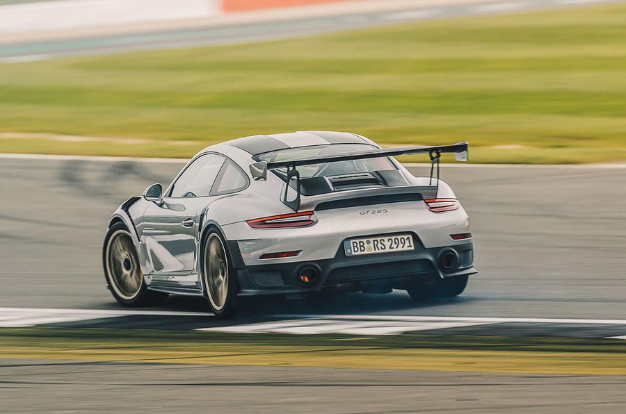

History of the automobile
The early history of the automobile can be divided into a number of eras, based on the prevalent means of propulsion. Later periods were defined by trends in exterior styling, size, and utility preferences.
In 1769 the first steam-powered automobile capable of human transportation was built by Nicolas-Joseph Cugnot.
McLaren 720S

The McLaren 720S is a British sports car designed and manufactured by McLaren Automotive. It is the second all-new car in the McLaren Super Series, replacing the 650S beginning in May 2017. The 720S was launched at the Geneva Motor Show on 7 March 2017 and is built on a modified carbon chassis, which is lighter and stiffer in contrast to the 650S.
Porsche 911 GT2 RS

The Porsche 911 GT2 is a high-performance sports car built by the German manufacturer Porsche from 1993 to 1998, 2001 to 2005, 2007 to 2012, and then since 2018 (as the GT2 RS).